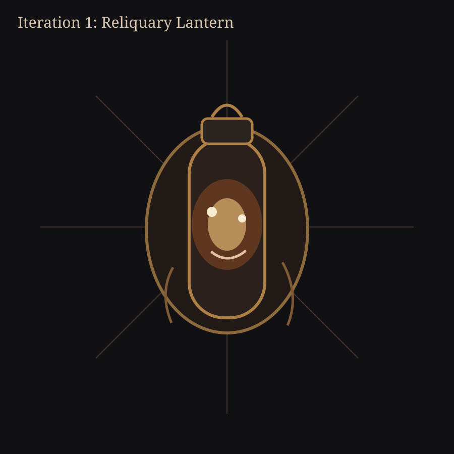
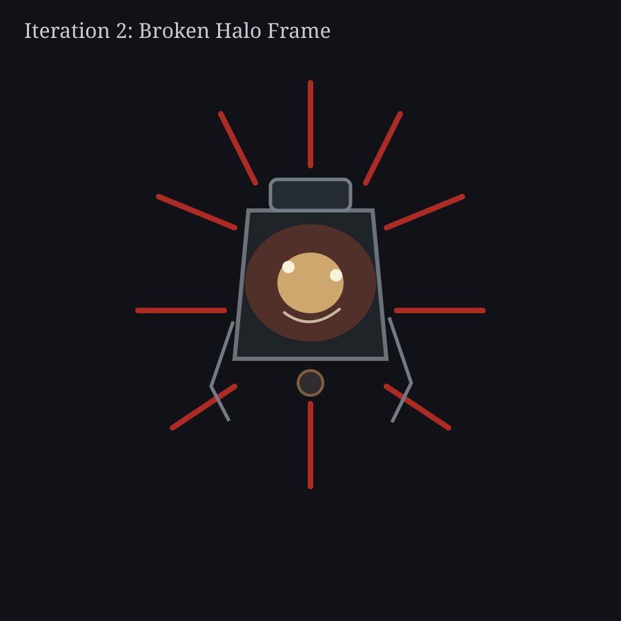
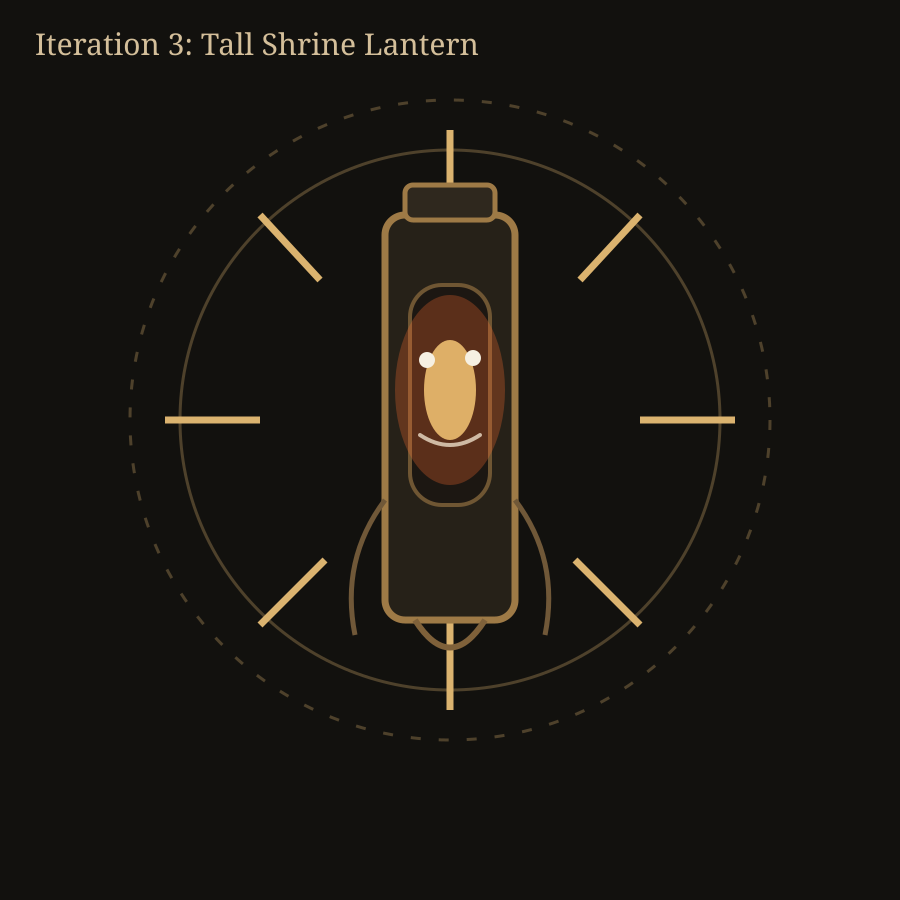
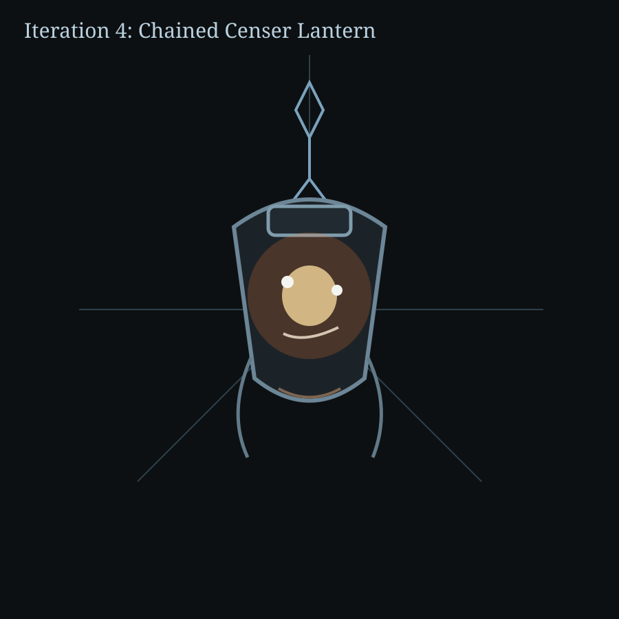
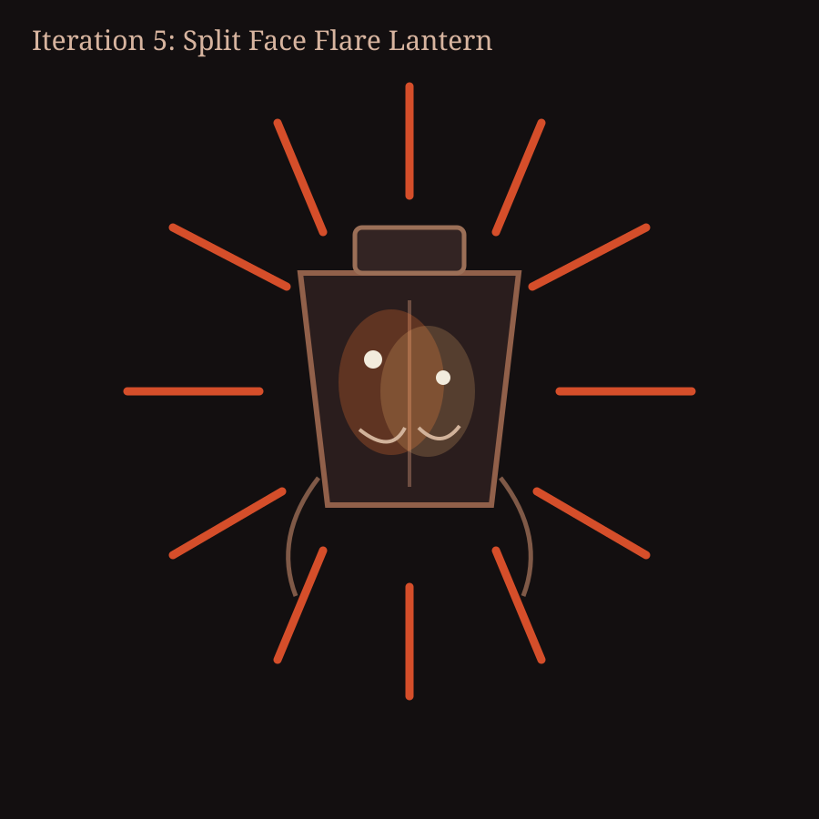

Lantern God - Rough Visual Iterations
Fast silhouette/expression passes for companion concept exploration.

1. Reliquary Lantern

2. Broken Halo Frame

3. Tall Shrine Lantern

4. Chained Censer Lantern

5. Split Face Flare Lantern